대기환경기사 (2016-05-08 기출문제)
1과목: 대기오염 개론
1. 실내공기오염물질 중 "라돈"에 관한 설명으로 틀린 것은?
- 무색, 무취의 기체이며 액화 시 푸른색을 띤다.
- 화학적으로 거의 반응을 일으키지 않는다.
- 일반적으로 인체에 폐암을 유발시키는 것으로 알려져 있다.
- 라듐의 핵분열시 생성되는 물질이며 반감기는 3.8일간 이다.
(정답률: 82%)

2. Down Wash 현상에 관한 설명은?
- 원심력집진장치에서 처리가스량의 5~10%정도를 흡인하여 줌으로써 유효원심력을 증대시키는 방법이다.
- 굴뚝의 높이가 건물보다 높은 경우 건물 뒤편에 공동현상이 생기고 이 공동에 대기오염물질의 농도가 낮아지는 현상을 말한다.
- 굴뚝 아래로 오염물질이 휘날리어 굴뚝 밑 부분에 오염물질의 농도가 높아지는 현상을 말한다.
- 해가 뜬 후 지표면이 가열되어 대기가 지면으로부터 열을 받아 지표면 부근부터 역전층이 해소되는 현상을 말한다.
(정답률: 83%)
3. 굴뚝에서 배출되는 plume의 유효상승고를
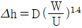
에 의해 계산하고자 한다. 굴뚝의 내경이 2m, 풍속이 3m/sec라고 할 때, Δh를 4m까지 상승시키려고 한다면 배출가스의 분출속도는?- 약 5m/sec
- 약 8m/sec
- 약 11m/sec
- 약 14m/sec
(정답률: 67%)
4. 대기층은 물리적 및 화학적 성질에 따라서 고도별로 분류가 되어 있다. 지표면으로부터 상공으로 올바르게 배열된 것은?
- 대류권 → 중간권 → 성층권 → 열권
- 대류권 → 중간권 → 열권 → 성층권
- 대류권 → 성층권 → 중간권 → 열권
- 대류권 → 열권 → 중간권 → 성층권
(정답률: 81%)
5. 고속도로상의 교통밀도가 25000대/hr이고, 각 차량의 평균 속도가 110km/hr이다. 차량의 평균 탄화수소 배출량이 0.06g/s·대 일 때, 고속도로에서 방출되는 탄화수소의 총량(g/s·m)은?
- 0.00136
- 0.0136
- 1.36
- 13.6
(정답률: 73%)
6. 지상 10m에서의 풍속이 2m/sec라면 100m에서의 풍속은? (단, Deacon 식 활용, 풍속지수 P= 0.5로 가정)
- 약 3.4m/sec
- 약 4.9m/sec
- 약 5.5m/sec
- 약 6.3m/sec
(정답률: 67%)
7. 대기오염원의 영향을 평가하는 방법 중 분산모델에 관한 설명으로 가장 거리가 먼 것은?
- 지형 및 오염원의 조업조건에 영향을 받는다.
- 시나리오 작성이 곤란하고, 미래예측이 어렵다.
- 오염물의 단기간 분석 시 문제가 된다.
- 먼지의 영향평가는 기상의 불확실성과 오염원의 미확인인 경우에 문제점을 가진다.
(정답률: 82%)
8. 황산화물이 각종 물질에 미치는 영향에 대한 설명 중 틀린 것은?
- 공기가 SO2를 함유하면 부식성이 매우 강하게 된다.
- SO2는 대기 중의 분진과 반응하여 황산염이 형성됨으로써 대부분의 금속을 부식시킨다.
- 대기에서 형성되는 아황산 및 황산은 석회, 대리석, 시멘트 등 각종 건축재료를 약화시킨다.
- 황산화물은 대기 중 또는 금속의 표면에서 황산으로 변함으로써 부식성을 더 약하게 한다.
(정답률: 85%)
9. 지구온난화가 환경에 미치는 영향 중 옳은 것은?
- 온난화에 의한 해면상승은 전지구적으로 일정하게 발생한다.
- 대류권 오존의 생성반응을 촉진시켜 오존의 농도가 감소한다.
- 기상조건의 변화는 대기오염의 발생횟수와 오염농도에 영향을 준다.
- 기온상승과 토양의 건조화는 생물성장의 남방한계에는 영향을 주지만 북방한계에는 영향을 주지 않는다.
(정답률: 79%)
10. A굴뚝으로부터 배출되는 SO2가 풍하측 5000m 지점에서 지표 최고농도를 나타냈을 때, 유효굴뚝 높이는? (단, Sutton의 확산식을 사용하고, 수직확산계수는 0.07, 대기안정도 지수(n)는 0.25 이다.)
- 약 120m
- 약 140m
- 약 160m
- 약 180m
(정답률: 54%)
11. 염화수소 1 V/V ppm에 상당하는 W/W ppm은? (단, 표준상태기준, 공기의 밀도는 1.293kg/m3)
- 약 0.76
- 약 0.93
- 약 1.26
- 약 1.64
(정답률: 50%)
12. 대기오염물질 중 바닷물의 물보라 등이 배출원이며, 1차 오염물질에 해당하는 것은?
- N2O3
- 알데하이드
- HCN
- NaCl
(정답률: 84%)
13. Richardson number에 관한 설명 중 틀린 것은?
- 리차드슨 수가 0에 접근하면 분산은 줄어들며 결국 대류난류만 존재한다.
- 무차원수로서 근본적으로 대류난류를 기계적인 난류로 전환시키는 율을 측정한 것이다.
- 큰 음의 값을 가지면 굴뚝의 연기는 수직 및 수평방향으로 빨리 분산한다.
- 0.25보다 크게 되면 수직혼합은 없어지고 수평상의 소용돌이만 남게 된다.
(정답률: 79%)
14. 광화학반응에 대한 설명 중 틀린 것은?
- 대기 중의 어떤 종류의 분자는 태양빛을 흡수하여 여기상태가 되거나 또는 분해한다.
- 성층권의 오존층이 대부분의 자외선을 차단한 후 대류권으로 들어오는 태양 빛의 파장은 180nm 이상의 단파장이다.
- 대류권에서 광화학 대기오염에 영향을 미치는 물질은 280~700nm의 범위에 있는 빛을 흡수하는 물질이다.
- 0.3㎛ 이하의 단파장에서 성층권의 오존층에 의한 태양빛의 흡수가 있다.
(정답률: 65%)
15. 대기오염사건과 기온역전에 관한 설명으로 옳지 않은 것은?
- 로스앤젤레스 스모그사건은 광화학스모그에 의한 침강성 역전이다.
- 런던스모그 사건은 주로 자동차 배출가스 중의 질소산화물과 반응성 탄화수소에 의한 것이다.
- 침강역전은 고기압 중심부분에서 기층이 서서히 침강하면서 기온이 단열변화로 승온되어 발생하는 현상이다.
- 복사역전은 지표에 접한 공기가 그보다 상공의 공기에 비하여 더 차가워져서 생기는 현상이다.
(정답률: 80%)
16. 대기오염물질과 피해현상을 잘못 연결한 것은?
- 황산화물 - 금속을 부식시키며, 습도가 높을수록 부식율은 증가한다.
- 황화수소 - 금속의 표면에 검은 피막을 형성시켜 외관상의 피해를 주며, 도료를 변색시킨다.
- 오존 - 섬유류를 퇴색시키고, 특히 고무를 쉽게 노화시킨다.
- 질소산화물 - 대리석, 모르타르 등의 탄산염을 함유하는 물질을 부식시킨다.
(정답률: 65%)
17. 연기의 형태에 관한 설명 중 옳지 않은 것은?
- 지붕형: 하층에 비하여 상층이 안정한 대기상태를 유지할 때 발생한다.
- 환상형: 과단열감률 조건일 때, 즉 대기가 불안정할 때 발생한다.
- 원추형: 오염의 단면분포가 전형적인 가우시안 분포를 이루며, 대기가 중립 조건일 때 잘 발생한다.
- 부채형: 연기가 배출되는 상당한 고도까지도 강안정한 대기가 유지될 경우, 즉 기온역전 현상을 보이는 경우 연직운동이 억제되어 발생한다.
(정답률: 72%)
18. 인체 내에 축적되어 영향을 주는 오염물질 중 하나로 혈액 속의 헤모글로빈과 결합하여 카르복시헤모글로빈을 형성하는 것은?
- NO
- O3
- CO
- SO3
(정답률: 73%)
19. 다음 중 납 배출 관련업종이 아닌 것은?
- 페인트
- 소오다 공업
- 인쇄
- 크레용
(정답률: 77%)
20. 지상으로부터 500m 까지의 평균 기온감률은 -1.2℃/100m이다. 100m 고도에서 17℃라 하면 고도 400m에서의 기온은?
- 10.6℃
- 11.8℃
- 12.2℃
- 13.4℃
(정답률: 69%)
2과목: 연소공학
21. 대형 소각로에 사용하는 가동식 화격자 상에서 건조, 연소 및 후연소가 이루어지며 쓰레기의 교반 및 연소조건이 양호하고 소각효율이 매우 높으나 마모가 많은 화격자 방식은?
- 회전 로울러식
- 부채형 반전식
- 계단식
- 역동식
(정답률: 65%)
22. 연소반응속도에 대한 설명으로 틀린 것은?
- 반응속도식은 온도와 가연성물질의 농도에 의존한다.
- 연료와 공기가 혼합된 상태에서는 균질반응을 하며, 균질반응속도는 Arrhenius식으로 나타낸다.
- 공급 공기량이 적은 상태에서 가연성 기체의 화염은 탄소입자가 발생해 황색을 나타낸다.
- 연료의 혼합기체 연소 시 불꽃색이 청색으로 보이는 부분은 연소속도가 아주 느린 상태이다.
(정답률: 69%)
23. 황함량이 가장 낮은 연료는?
- LPG
- 중유
- 경유
- 휘발유
(정답률: 78%)
24. 디첼기관의 노킹(diesel knocking) 방지법으로 옳은 것은?
- 세탄가가 10 정도로 낮은 연료를 사용한다.
- 연료 분사개시 때 분사량을 증가시킨다.
- 기관의 압축비를 높여 압축압력을 높게 한다.
- 기관 내로 분사된 연료를 한꺼번에 발화시킨다.
(정답률: 66%)
25. 연소에 대한 설명으로 가장 거리가 먼 것은?
- 연소용 공기 중 버너로 공급되는 공기는 1차공기이다.
- 연소온도에 가장 큰 영향을 미치는 인자는 연소용 공기의 공기비이다.
- 소각로의 연소효율을 판단하는 인자는 배출가스 중 이산화탄소의 농도이다.
- 액체연료에서 연료의 C/H 비가 작을수록 검댕의 발생이 쉽다.
(정답률: 79%)
26. 3000K 정도의 고온조건으로 연소할 때 일산화탄소가 상당량 발생되는 원인으로 옳은 것은?
- 혼합상태가 불량해지기 때문이다.
- 산소 부족현상이 나타나기 때문이다.
- 이산화탄소가 열분해되기 때문이다.
- 연소시간이 불충분해지기 때문이다.
(정답률: 62%)
27. 황 함유량 1.6wt% 인 중유를 시간당 50 ton으로 연소시킬 때 SO2의 배출량(Sm3/hr)은? (단, 표준상태를 기준으로 하고, 황은 100% 반응하며, 이 중 5%는 SO3로 나머지는 SO2로 배출된다.)
- 532
- 560
- 585
- 6⑤
(정답률: 53%)
28. 옥탄가에 대한 설명으로 틀린 것은?
- n-Paraffine에서는 탄소수가 증가할수록 옥탄가가 저하하여 C7에서 옥탄가는 0이다.
- 방향족 탄화수소의 경우 벤젠고리의 측쇄가 C3까지는 옥탄가가 증가하지만 그 이상이면 감소한다.
- Naphthene계는 방향족 탄화수소보다는 옥탄가가 작지만 n-paraffine계 보다는 큰 옥탄가를 가진다.
- iso-Paraffine에서는 methyl기 가지가 적을수록, 중앙에 집중하지 않고 분산될수록 옥탄가가 증가한다.
(정답률: 77%)
29. 연료의 완전연소 시 발열량(kcal/Sm3)이 가장 큰 것은?
- Propane
- Ethylene
- Acetylene
- Propylene
(정답률: 70%)
30. 공기비가 너무 낮을 경우 나타나는 현상으로 틀린 것은?
- 연소효율이 저하된다.
- 연소실 내의 연소온도가 낮아진다.
- 가스의 폭발위험과 매연발생이 크다.
- 가연성분과 산소의 접촉이 원활하게 이루어지지 못한다.
(정답률: 59%)
31. 유류버너의 종류에 관한 설명 중 틀린 것은?
- 유압식버너에서 원료유의 분무각도는 압력, 점도 등으로 약간 달라지지만 40-90°정도이다.
- 고압공기식버너는 고점도 사용에도 가능하며, 분무각도가 20-30°정도이며, 장염이나 연소시 소음이 발생된다.
- 저압공기식버너는 구조가 간단하고, 유량조절범위는 1:10 정도이며, 무화상태가 좋아서 대형 가열로에 주로 사용한다.
- 회전식버너의 유량조절범위는 1:5 정도이고, 유압식버너에 비해 연료유의 분무화 입경은 비교적 크다.
(정답률: 77%)
32. 부피비 99%의 메탄(CH4)과 미량의 불순물로 구성된 탄화수소 혼합가스 3L를 완전연소할 때 필요한 이론적 공기량(L)은?
- 약 9.4
- 약 13.5
- 약 19.8
- 약 28.3
(정답률: 47%)
33. 석유에 관한 설명으로 틀린 것은?
- 경질유는 방향족계 화합물을 10% 미만 함유한다고 할 수 있다.
- 점도가 낮을수록 유동점이 낮아지므로 일반적으로 저점도의 중유는 고점도의 중유보다 유동점이 낮다.
- 석유의 동점도가 감소하면 끓는점과 인화점이 높아지고, 연소가 잘 된다.
- 석유의 비중이 커지면 탄화수소비(C/H)가 증가한다.
(정답률: 63%)
34. 중유는 A, B, C로 구분된다. 이것을 구분하는 기준은?
- 점도
- 비중
- 착화온도
- 유황함량
(정답률: 68%)
35. 기체 연료의 연소방식 중 확산연소에 관한 설명으로 가장 거리가 먼 것은?
- 역화의 위험성이 없다.
- 가스와 공기를 예열할 수 없다.
- 붉고 긴 화염을 만든다.
- 연료의 분출속도가 클 경우에는 그을음이 발생하기 쉽다.
(정답률: 61%)
36. 기체연료의 연소방식으로 옳은 것은?
- 스토커 연소
- 예혼합 연소
- 유동층 연소
- 회전식버너 연소
(정답률: 76%)
37. 무연탄의 탄화도가 커질수록 나타나는 성질로서 틀린 것은?
- 휘발분이 감소한다.
- 발열량이 증가한다.
- 착화온도가 낮아진다.
- 고정탄소의 양이 증가한다.
(정답률: 63%)
38. 중유연소 가열로의 배기가스를 분석한 결과 용량비로 N2 = 80%, CO = 12%, O2 = 8%의 결과를 얻었다. 공기비는?
- 1.1
- 1.4
- 1.6
- 2.0
(정답률: 54%)
39. 연소 부산물 중 클링커(Clinker) 발생 및 대책으로 가장 거리가 먼 것은?
- 연료층 내부온도가 높을 때 회분이 환원분위기 속에서 고온열화로 발생된다.
- 연료 연소층의 교반속도를 크게 할수록 클링커 발생량이 줄어든다.
- 연료 연소층의 온도분포가 균일한 경우 클링커 발생이 억제된다.
- 연료 중의 회분 유입을 억제하여 클링커 발생을 예방할 수 있다.
(정답률: 64%)
40. 2차반응에서 반응물질의 농도를 같게 했을 때, 그 10%가 반응하는데 250초 걸렸다면 90% 반응하는데 걸리는 시간(초)은?
- 18550
- 20250
- 24550
- 28250
(정답률: 58%)
3과목: 대기오염 방지기술
41. 유해가스 처리 시 사용되는 충전탑(packed tower)에 관한 설명으로 틀린 것은?
- 액분산형 흡수장치로서 충전물의 충전방식을 불규칙적으로 했을 때 접촉면적은 크나, 압력손실이 커진다.
- 충전탑에서 hold-up 이라는 것은 탑의 단위면적당 충전재의 양을 의미한다.
- 흡수액에 고형물이 함유되어 있는 경우에는 침전물이 생기는 방해를 받는 다.
- 일정양의 흡수액을 흘릴 때 유해가스의 압력손실은 가스속도의 대수값에 비례하며, 가스속도 증가시 나타나는 첫 번째 파과점을 loading point라 한다.
(정답률: 68%)
42. 송풍기가 표준공기(밀도: 1.2kg/m3)를 10m3/sec로 이동시키고 1000rpm으로 회전할 때 정압이 900N/m2이었다면 공기밀도가 1.0kg/m3으로 변할 때 송풍기의 정압은?
- 520 N/m2
- 625 N/m2
- 750 N/m2
- 820 N/m2
(정답률: 43%)
43. 공기의 유속과 점도가 각각 1.5m/s 와 0.0187 cP일 때 레이놀즈 수를 계산한 결과 1950이었다. 이 때 덕트 내를 이동하는 공기의 밀도는? (단, 덕트의 직경은 75mm 이다.)
- 0.23 kg/m3
- 0.29 kg/m3
- 0.32 kg/m3
- 0.40 kg/m3
(정답률: 57%)
44. 전기집진장치의 집진율과 집진기 변수와의 관계식은? (단, η: 집진율, A : 집진극의 면적(m2), V : 입자의 유속(m/s), Q : 가스유량(m3/s))
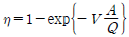
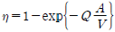
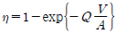
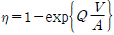
(정답률: 63%)
45. 싸이클론의 원추부 높이가 1.4m, 유입구 높이가 15cm, 원통부 높이가 1.4m 일 때 외부선회류의 회전수는? (단, N = (1/HA)[HB + (HC/2)]]
- 6회
- 11회
- 14회
- 18회
(정답률: 65%)
46. 염소가스를 함유하는 배출가스에 100kg의 수산화나트륨을 포함한 수용액을 순환 사용하여 100% 반응시킨다면 몇 kg의 염소가스를 처리할 수 있는가? (단, 표준상태 기준)
- 약 82kg
- 약 85kg
- 약 89kg
- 약 93kg
(정답률: 47%)
47. 여과집진장치의 먼지제거 매커니즘과 가장 거리가 먼 것은?
- 관 성 충 돌 (inertial im paction)
- 확 산 (diffusion)
- 직 접 차 단 (direct interception)
- 무 화 (atom ization)
(정답률: 70%)
48. 활성탄의 가스흡착에서 흡착이 진행될 때 활성탄의 온도 변화는?
- 활성탄의 온도가 증가된다.
- 활성탄의 온도가 감소된다.
- 활성탄의 온도의 변화가 없다.
- 활성탄의 온도는 감소하다가 변화가 없다.
(정답률: 62%)
49. 원심력 집진장치에서 압력손실의 감소원인으로 가장 거리가 먼 것은?
- 장치 내 처리가스가 선회되는 경우
- 호포 하단 부위에 외기가 누입될 경우
- 외통의 접합부 불량으로 함진가스가 누출될 경우
- 내통이 마모되어 구멍이 뚫려 함진가스가 by-pass될 경우
(정답률: 73%)
50. 자연 통풍력을 증대시키기 위한 방법과 가장 거리가 먼 것은?
- 굴뚝을 높인다.
- 굴뚝 통로를 단순하게 한다.
- 굴뚝안의 가스를 냉각시킨다.
- 굴뚝가스의 체류시간을 증가시킨다.
(정답률: 59%)
51. 충전탑에 관한 설명으로 틀린 것은?
- 충전탑은 flooding point의 40~70%에서 보통 설계된다.
- 일정한 양의 흡수액을 흘릴 때 유해가스의 압력손실은 가스속도의 대수값에 반비례한다.
- 가스속도를 증가시키면 2군데에서 break point가 나타나는데, 1번째 break point가 loading point 이다.
- flooding point에서의 가스속도는 충전제를 불규칙하게 쌓았을 때보다 규칙적으로 쌓았을 때가 더 크다.
(정답률: 58%)
52. 유해가스에 대한 설명 중 가장 거리가 먼 것은?
- Cl2가스는 상온에서 황록색을 띤 기체이며 자극성 냄새를 가진 유독물질로 관련 배출원은 표백공업이다.
- F2는 상온에서 무색의 발연성 기체로 강한 자극성이며 물에 잘 녹고 관련 배출원은 알루미늄 제련공업이다.
- SO2는 무색의 강한 자극성 기체로 환원성 표백제로도 이용되고 화석연료의 연소에 의해서도 발생된다.
- NO는 적갈색의 특이한 냄새를 가진 물에 잘 녹는 맹독성 기체로 자동차배출이 가장 많은 부분을 차지한다.
(정답률: 70%)
53. 먼지농도 50g/Sm3의 함진가스를 정상운전 조건에서 96%로 처리하는 싸이클론이 있다. 처리가스의 15%에 해당하는 외부공기가 유입될 때의 먼지 통과율이 외부공기 유입이 없는 정상운전 시의 2배에 달한다면, 출구가스중의 먼지농도는?
- 3.0 g/Sm3
- 3.5 g/Sm3
- 4.0 g/Sm3
- 4.5 g/Sm3
(정답률: 34%)
54. 유해오염물질과 그 처리방법에 관한 설명으로 틀린 것은?
- 비소는 염산용액으로 포집 후, Ca(OH)2에 대한 피흡착력을 이용하여 제거한다.
- 벤젠은 촉매연소법이나 활성탄 흡착법을 사용하여 제거한다.
- 염화인은 충전물을 채운 흡수탑을 이용하여 알칼리성 용액에 흡수시켜 제거한다.
- 크롬산 미스트는 비교적 입자크기가 크고 친수성이므로 수세법으로 제거한다.
(정답률: 41%)
55. 입구 직경이 400mm인 접선유입식 싸이클론으로 함진가스 100m3/min을 처리할 때, 배출가스의 밀도는 1.28kg/m3이고, 압력손실계수가 8이면 싸이클론 내의 압력손실은?
- 83 mmH2O
- 92 mmH2O
- 114 mmH2O
- 126 mmH2O
(정답률: 39%)
56. 높이 100m, 직경이 1m인 굴뚝에서 260℃의 배출가스가 12000m3/hr로 토출될 때 굴뚝에 의한 마찰손실은 약 얼마인가? (단, 굴뚝의 마찰계수는 λ= 0.06, 표준상태의 공기밀도는 1.3kg/m3)
- 1.84 mmH2O
- 2.94 mmH2O
- 3.68 mmH2O
- 4.82 mmH2O
(정답률: 37%)
57. 벤츄리스크러버(Venturi scrubber)에 관한 설명으로 가장 거리가 먼 것은?
- 목부의 처리가스 속도는 보통 60-90m/s 이다.
- 물방울 입경과 먼지 입경의 비는 충돌효율면에서 10:1 전후가 좋다.
- 액가스비는 보통 0.3~1.5L/m3 정도, 압력손실은 300~800 mmH2O 전후이다.
- 가압수식 중에서 집진율이 가장 높아 대단히 광범위하게 사용되며, 소형으로 대용량의 가스처리가 가능하다.
(정답률: 51%)
58. 후드에서 오염물질을 흡인하는 요령으로 틀린 것은?
- 후드를 발생원에 근접시킨다.
- 국부적인 흡인방식을 택한다.
- 충분한 포착속도를 유지한다.
- 후드의 개구면적을 크게 한다.
(정답률: 72%)
59. 가스의 압력손실은 작은 반면, 세정액 분무를 위해 상당한 동력이 요구되며, 장치의 압력손실은 2~20mmH2O, 가스 겉보기 속도는 0.2~1m/s 정도인 세정집진장치는?
- 벤츄리스크러버(Venturi scrubber)
- 싸이클론스크러버(Cyclone scrubber)
- 충전탑(Packed tower)
- 분무탑(Spray tower)
(정답률: 56%)
60. 원심력 집진장치에 사용되는 용어의 관한 설명으로 틀린 것은?
- 임계입경(Critical diameter)은 100%분리한계입경이라고도 한다.
- 분리계수가 클수록 집진율은 증가한다.
- 분리계수는 입자에 작용하는 원심력을 관성력으로 나눈 값이다.
- 사이클론에서 입자의 분리속도는 함진가스의 선회속도에는 비례하는 반면, 원통부 반경에는 반비례한다.
(정답률: 52%)
4과목: 대기오염 공정시험기준(방법)
61. 배출가스 중 금속화합물을 원자흡수분광광도법으로 분석할 때 간섭물질에 관한 설명으로 틀린 것은?
- 시료 내 납, 카드뮴, 크롬의 양이 미량으로 존재하거나 방해물질이 존재할 경우, 용매추출법을 적용하여 정량할 수 있다.
- 아연 분석시 213.8 nm 측정파장을 이용할 경우 불꽃에 의한 흡수 때문에 바탕선(baseline)이 높아지는 경우가 있다.
- 니켈 분석시 다량의 탄소가 포함된 시료의 경우, 시료를 채취한 여과지를 적당한 크기로 잘라서 자기도가니에 넣어 전기로를 사용하여 800℃에서 30분 이상 가열한 후 전처리조작을 행한다.
- 철 분석시 규소를 다량 포함하고 있을 때는 0.5% 인산용액을 첨가하여 분석하고, 유기산(특히 시트르산)이 다량 포함되어 있을 때는 0.2% 염화칼슘용액을 첨가하여 간섭을 줄일 수 있다.
(정답률: 45%)
62. 배출가스 중 가스상물질의 시료채취장치 중 채취부에 사용되는 부품의 조건으로 옳지 않은 것은?
- 펌프는 배기능력 10~20L/min인 개방형을 쓴다.
- 가스미터는 일회전 1L의 습식 또는 건식 가스미터를 쓴다.
- 수은 마노미터는 대기와 압력차가 100mmHg이상인 것을 쓴다.
- 가스건조탑은 유리로 만든 가스건조탑을 쓰며, 건조제로서는 입자상태의 염화칼슘 등을 쓴다.
(정답률: 56%)
63. 환경기준 시험을 위한 채취지점수(측정점수) 결정시 TM좌표에 의한 방법중 ( )에 알맞은 것은?
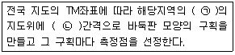
- ㉠ 1 : 5000 이상, ㉡ 200~300 m
- ㉠ 1 : 5000 이상, ㉡ 2~3 km
- ㉠ 1 : 25000 이상, ㉡ 200~300 m
- ㉠ 1 : 25000 이상, ㉡ 2~3 km
(정답률: 63%)
64. 굴뚝에서 배출되는 가스상물질 중 포름알데히드 채취 시 채취관의 재질로 알맞지 않은 것은?
- 경질유리
- 스테인리스강
- 석영
- 불소수지
(정답률: 54%)
65. 굴뚝 배출가스 중의 수분량을 흡습관법으로 측정한 결과 다음과 같은 결과 값을 얻었다. 습배출가스 중의 수증기 백분율은? (단, 표준상태 기준)
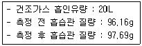
- 약 6.4%
- 약 7.1%
- 약 8.7%
- 약 9.5%
(정답률: 35%)
66. 기체크로마토그래피의 설치조건에 관한 설명으로 틀린 것은?
- 설치장소는 진동이 없고 부식가스나 먼지가 적고 실온 5~35℃, 상대습도 85% 이하로서 직사광선이 쪼이지 않는 곳으로 한다.
- 공급전원은 지정된 전력 및 주파수이어야 하고, 전원변동은 지정전압의 10% 이내로서 주파수의 변동이 없는 것이어야 한다.
- 고주파가열로와 같은 것으로부터 전자기의 유도를 받지 않아야 한다.
- 분리관을 장치에 부착한 후 운반가스의 압력을 사용압력 이하로 유지하면서 가스누출 시험을 한다.
(정답률: 55%)
67. 대기 및 굴뚝 배출가스 중 일산화탄소를 연속적으로 측정하는 비분산 정필터형 적외선 가스 분석계(고정형)의 성능 유지조건으로 옳은 것은?
- 최종 지시값에 대한 90%의 응답을 나타내는 시간은 60초 이내어어야 한다.
- 전체 눈금의 ±5% 이하에 해당하는 농도변화를 검출할 수 있는 감도를 지녀야 한다.
- 동일 조건에서 제로가스를 연속적으로 도입하여 24시간 연속측정하는 동안 전체눈금의 ±5% 이상의 지시변화가 없어야 한다.
- 전압변동에 대한 안전성 측면에서 전원전압이 설정 전압의 ±10% 이내로 변화하였을 때 지시값의 변화는 전체눈금의 ±1% 이내이어야 한다.
(정답률: 48%)
68. 일정한 굴뚝을 거치지 않고 외부로 비산 배출되는 먼지측정을 위한 고용량 공기시료채취법의 시료채취방법으로 옳지 않은 것은?
- 시료채취장소는 원칙적으로 측정하려고 하는 발생원의 부지경계선상에 선정 하며 풍향을 고려하여 그 발생원의 비산먼지 농도가 가장 높을 것으로 예상되는 지점 3개소 이상을 선정한다.
- 별도로 발생원의 위(upstream)인 바람의 방향을 따라 대상 발생원의 영향이 없을 것으로 추측되는 곳에 대조위치를 선정한다.
- 시료채취는 1회 10분 이상 연속 채취하며, 풍속이 1m/s 미만으로 바람이 거의 없을 때는 시료채취를 하지 않는다.
- 풍향풍속의 측정 시 연속기록 장치가 없을 경우에는 적어도 10분 간격으로 같은 지점에서 3회 이상 풍향풍속을 측정하여 기록한다.
(정답률: 59%)
69. A도시면적이 150km2 이고 인구밀도가 4000명/km2 이며 전국 평균 인구밀도가 800명/km2일 때, 인구비례에 의한 방법으로 결정한 A도시의 환경기준 시험을 위한 시료채취 지점 수는? (단, A도시면적은 지역의 가주지면적(총 면적에서 전답, 임야, 호수, 하천 등의 면적을 뺀 면적)이다.)
- 30개
- 35개
- 40개
- 45개
(정답률: 53%)
70. 환경대기 중의 아황산가스를 산정량 수동법으로 측정하였다. 시료용액에 지시용액을 두 방울 가하고 0.01N 알칼리용액으로 적정하여 회색이 될 때 들어간 알칼리의 양이 20mL, 채취한 시료량은 10m3이었다. 이 때 아황산가스의 농도(㎍/m3)는?
- 640
- 1280
- 1460
- 1640
(정답률: 22%)
71. 환경대기 중의 먼지 측정방법 중 습도, 비, 안개 등의 영향을 크게 받기 때문에 상대습도가 70%이상이 되면 측정치의 신뢰도가 낮아지는 측정방법은?
- 하이볼륨에어샘플러법
- 로우볼륨에어샘플러법
- 광산란법
- 광투과법
(정답률: 57%)
72. 환경대기 중 탄화수소 측정방법에서 총탄화수소 측정법 성능기준으로 옳지 않은 것은?
- 측정범위는 0~10ppmC, 0~25ppmC 또는 0~50ppmC로 하여 1~3단계(Range)의 변환이 가능한 것이어야 한다.
- 응답시간은 스팬가스를 도입시켜 측정치가 일정한 값으로 급격히 변화되어 스팬가스 농도의 90% 변화할 때 까지의 시간은 2분 이하여야 한다.
- 제로가스 및 스팬가스를 흘려보냈을 때 정상적인 측정치의 변동은 각 측정단계(Range)마다 최대 눈금값의 ±3%의 범위 내에 있어야 한다.
- 제로조정 및 스팬조정을 끝낸 후 그 중간농도의 교정용 가스를 주입시켰을 경우에 상당하는 메탄 농도에 대한 지시오차는 각 측정단계(Range)마다 최대 눈금치의 ±5%의 범위 내에 있어야 한다.
(정답률: 32%)
73. 굴뚝 배출가스 중 다이옥신 및 퓨란류 분석시 시약으로 사용하는 증류수로 옳은 것은?
- 메탄올로 세정한 증류수
- 아세톤으로 세정한 증류수
- 노말헥산으로 세정한 증류수
- 디클로로메탄으로 세정한 증류수
(정답률: 55%)
74. 연료용 유류 중의 황함유량 분석방법으로 옳지 않은 것은?
- 연소관식 공기법은 500~550℃로 가열한 석영재질 연소관 중에 공기를 불어넣어 시료를 연소시킨 후 생성된 황산화물을 붕산나트륨(9%)에 흡수시켜 황산으로 만든 다음, 수산화소듐표준액으로 중화적정한다.
- 연소관식 공기법의 경우 불용성 황산염을 만드는 금속(Ba, Ca 등)이 들어있는 시료에는 적용할 수 없다.
- 연소관식 공기법의 경우 연소되어 산을 발생시키는 원소(Pn N, Cl 등)가 들어있는 시료에는 적용할 수 없다.
- 방사선식 여기법은 시료에 방사선을 조사하고, 여기된 황의 원자에서 발생하는 형광 X선의 강도를 측정한다.
(정답률: 51%)
75. 이온크로마토그래피에서 사용되는 검출기 중 정전위 전극반응을 이용하고, 검출 감도가 높고 선택성이 있어 분석화학 분야에 널리 이용되는 검출기는?
- 가시선 흡수 검출기
- 정전위 검출기
- 전기화학적 검출기
- 전기전도도 검출기
(정답률: 49%)
76. 다음은 시험의 기재 및 용어에 관한 설명이다. ( )안에 알맞은 것은?
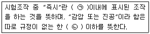
- ㉠ 10초, ㉡ 15 mmH2O
- ㉠ 10초, ㉡ 15 mmHg
- ㉠ 30초, ㉡ 15 mmH2O
- ㉠ 30초, ㉡ 15 mmHg
(정답률: 65%)
77. 환경대기 중의 질소산화물을 자동연속측정하는 방법과 가장 거리가 먼 것은?
- 자외선형광법
- 살츠만법
- 화학발광법
- 흡광차분광법
(정답률: 49%)
78. 원자흡수분광광도법에 사용되는 불꽃 중 불꽃의 온도가 높아 불꽃 중에서 해리하기 어려운 내화성 산화물(refractory oxide)을 만들기 쉬운 원소의 분석에 가장 적합한 것은?
- 아세틸렌-공기
- 아세틸렌-산소
- 수소-공기-알곤
- 아세틸렌-아산화질소
(정답률: 59%)
79. 링겔만 매연 농도표에 의한 배출가스 중 매연의 농도 측정 시 연도 배출구에서 몇 cm 떨어진 곳의 농도와 비교하는가?
- 10~30 cm
- 15~30 cm
- 30~45 cm
- 45~60 cm
(정답률: 54%)
80. 비분산적외선분광분석법에서 분석계의 최고 눈금값을 교정하기 위하여 사용하는 가스는?
- 비교가스
- 제로가스
- 스팬가스
- 필터가스
(정답률: 70%)
5과목: 대기환경관계법규
81. 인증을 면제할 수 있는 자동차로 가장 적절한 것은?
- 항공기 지상조업용 자동차
- 여행자 등이 다시 반출할 것을 조건으로 일시 반입하는 자동차
- 외교관 또는 주한 외국군인의 가족이 사용하기 위하여 반입하는 자동차
- 외국에서 국내의 공공기관 또는 비영리단체에 무상으로 기증한 자동차
(정답률: 56%)
82. 다음은 대기환경보전법규상 자동차 운행정지표지에 관한 사항이다. ( )안에 알맞은 것은?
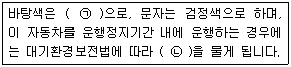
- ㉠ 흰색, ㉡ 100만원 이하의 벌금
- ㉠ 흰색, ㉡ 300만원 이하의 벌금
- ㉠ 노란색, ㉡ 100만원 이하의 벌금
- ㉠ 노란색, ㉡ 300만원 이하의 벌금
(정답률: 55%)
83. 대기환경보전법에서 사용하는 용어의 뜻으로 옳지 않은 것은?
- "저공해엔진"이란 자동차에서 배출되는 대기오염물질을 줄이기 위한 엔진(엔진개조에 사용하는 부품을 포함한다)으로서 환경부령으로 정하는 배출허용 기준에 맞는 엔진을 말한다.
- "검댕"이란 연소할 때에 생기는 유리탄소가 응결하여 입자의 지름이 1미크론 이상이 되는 입자상물질을 말한다.
- "온실가스"란 적외선 복사열을 흡수하거나 다시 방출하여 온실효과를 유발하는 대기 중의 가스상태 물질로서 이산화탄소, 메탄, 아산화질소, 수소불화탄소, 과불화탄소, 육불화황을 말한다.
- "촉매제"란 연료절감을 위해 엔진구동부에 사용되는 화학물질로서 부피비율로 1퍼센트 미만의 비율로 첨가하는 물질을 말한다.
(정답률: 60%)
84. 대기환경보전법 시행령에 규정된 사업장별 환경기술인의 자격기준으로 옳지 않은 것은?
- 대기오염물질발생량의 합계가 연간 80톤 이상인 사업장은 1종 사업장에 해당하는 기술인을 둘 수 있다.
- 대기오염물질발생량의 합계가 연간 20톤 이상 80톤 미만인 사업장은 2종 사업장에 해당하는 기술인을 둘 수 있다.
- 전체 배출시설에 대하여 방지시설 설치면제를 받은 사업장과 배출시설에서 배출되는 오염물질 등을 공동방지시설에서 처리하게 하는 사업장은 5종 사업장에 해당하는 기술인을 둘 수 있다.
- 5종 사업장 중 특정대기유해물질이 포함된 오염물질을 배출하는 경우에는 4종 사업장에 해당하는 기술인을 두어야 한다.
(정답률: 50%)
85. 대기환경보전법령상 초과부과금 산정기준에서 다음 중 오염물질이 1킬로그램 당 부과금액이 가장 적은 것은?
- 이황화탄소
- 암모니아
- 황화수소
- 불소화합물
(정답률: 51%)
86. 환경정책기본법상 대기환경기준에서 정하고 있는 일산화탄소의 8시간 평균치(ppm)은?
- 5 ppm 이하
- 7 ppm 이하
- 9 ppm 이하
- 12 ppm 이하
(정답률: 56%)
87. 다음 중 대기환경보전법령상"3종 사업장"에 해당되는 것은?
- 대기오염물질발생량의 합계가 연간 9톤인 사업장
- 대기오염물질발생량의 합계가 연간 11톤인 사업장
- 대기오염물질발생량의 합계가 연간 22톤인 사업장
- 대기오염물질발생량의 합계가 연간 52톤인 사업장
(정답률: 64%)
88. 최초로 배출시설을 설치한 경우에 환경기술인의 임명신고 시기로 적절한 것은?
- 배출시설 가동개시신고와 동시에 신고
- 배출시설 설치완료신고와 동시에 신고
- 배출시설 설치허가신청과 동시에 신고
- 환경기술인 임명과 동시에 신고
(정답률: 47%)
89. 배연탈황시설을 설치한 배출시설을 시운전할 경우 환경부령이 정하는 시운전 기간의 기준은?
- 배출시설 및 방지시설의 가동개시일부터 10일까지
- 배출시설 및 방지시설의 가동개시일부터 15일까지
- 배출시설 및 방지시설의 가동개시일부터 30일까지
- 배출시설 및 방지시설의 가동개시일부터 60일까지
(정답률: 54%)
90. 대기환경보전법규에 명시된 환경기술인의 교육사항에 관한 규정 중 ( )안에 들어갈 말로 옳은 것은?
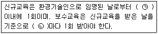
- ㉠ 6월, ㉡ 1년
- ㉠ 3월, ㉡ 1년
- ㉠ 1년, ㉡ 3년
- ㉠ 1년, ㉡ 5년
(정답률: 57%)
91. 대기환경보전법규상 자동차연료형 첨가제의 종류로 가장 거리가 먼 것은?
- 세척제
- 다목적첨가제
- 기관윤활제
- 유동성향상제
(정답률: 45%)
92. 수도권대기환경청장, 국립환경과학원장 또는 한국환경공단이 설치하는 대기오염 측정망의 종류가 아닌 것은?
- 대기오염물질의 지역 배경농도를 측정하기 위한 교외대기 측정망
- 도시지역의 휘발성 유기화합물 등의 농도를 측정하기 위한 광화학대기오염물질 측정망
- 산성 대기오염물질의 건성 및 습성 침착량을 측정하기 위한 상성강하물 측정망
- 대기 중의 중금속 농도를 측정하기 위한 대기 중금속 측정망
(정답률: 60%)
93. 대기 배출부과금 징수유예 기간 중의 분할납부의 횟수 기준은? (단, 초과 부과금의 경우)
- 2회 이내
- 4회 이내
- 6회 이내
- 12회 이내
(정답률: 49%)
94. 대기환경보전법령상 부과금의 부과면제 등에 관한 기준이다. ( )안에 알맞은 것은?
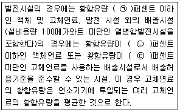
- ㉠ 0.3, ㉡ 0.5, ㉢ 0.6
- ㉠ 0.3, ㉡ 0.5, ㉢ 0.45
- ㉠ 0.1, ㉡ 0.3, ㉢ 0.5
- ㉠ 0.1, ㉡ 0.5, ㉢ 0.45
(정답률: 44%)
95. 자가방지시설을 설계·시공하고자 하는 경우, 시·도지사에게 제출해야 되는 서류로 가장 거리가 먼 것은?
- 공정도
- 기술능력 현황을 적은 서류
- 배출시설 설치도면 및 종업원 수
- 원료(연료 포함)사용량, 제품생산량 및 대기오염물질 등의 배출량을 예측한 명세서
(정답률: 56%)
96. 대기환경보전법상 위반행위 중 "200만원 이하의 과태료 부과"에 해당하는 것은?
- 제조기준에 맞지 아니한 것으로 판정된 자동차연료를 사용한 자
- 제조기준에 맞지 아니한 것으로 판정된 촉매제를 공급한 자
- 배출허용기준에 맞는지의 여부 확인을 위해 배출시설에 측정기기의 부착 등의 조치를 하지 아니한 자
- 제조기준에 맞지 아니하는 촉매제임을 알면서 사용한 자
(정답률: 39%)
97. 실내공기질 유지기준의 오염물질 항목으로만 짝지어진 것은?
- 미세먼지, 라돈
- 일산화탄소, 석면
- 오존, 총부유세균
- 이산화탄소, 폼알데하이드
(정답률: 42%)
98. 다중이용시설 등의 실내공기질 관리법규상 신축 공동주택의 실내공기질 권고기준 중 "에틸벤젠"기준으로 옳은 것은?
- 210㎍/m3 이하
- 300㎍/m3 이하
- 360㎍/m3 이하
- 700㎍/m3 이하
(정답률: 60%)
99. 대기환경보전법규상 자동차연료 제조기준 중 휘발유의 90% 유출온도(℃) 기준은? (단, 2009년 1월 1일부터 적용기준)
- 150℃ 이하
- 160℃ 이하
- 170℃ 이하
- 180℃ 이하
(정답률: 45%)
100. 다음은 대기환경보전법령상 환경부장관이 배출시설 설치를 제한할 수 있는 경우이다. ( )안에 알맞은 것은?
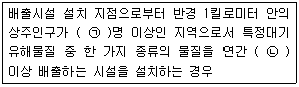
- ㉠ 1만, ㉡ 5톤
- ㉠ 1만, ㉡ 10톤
- ㉠ 2만, ㉡ 5톤
- ㉠ 2만, ㉡ 10톤
(정답률: 60%)
"무색, 무취의 기체이며 액화 시 푸른색을 띤다."는 라돈의 물리적 특성을 설명한 것입니다.
"화학적으로 거의 반응을 일으키지 않는다."는 라돈의 화학적 특성을 설명한 것입니다.
"라듐의 핵분열시 생성되는 물질이며 반감기는 3.8일간 이다."는 라돈의 원래 원소인 라듐의 핵분열에 의해 생성되며, 반감기는 3.8일인 것을 설명한 것입니다.